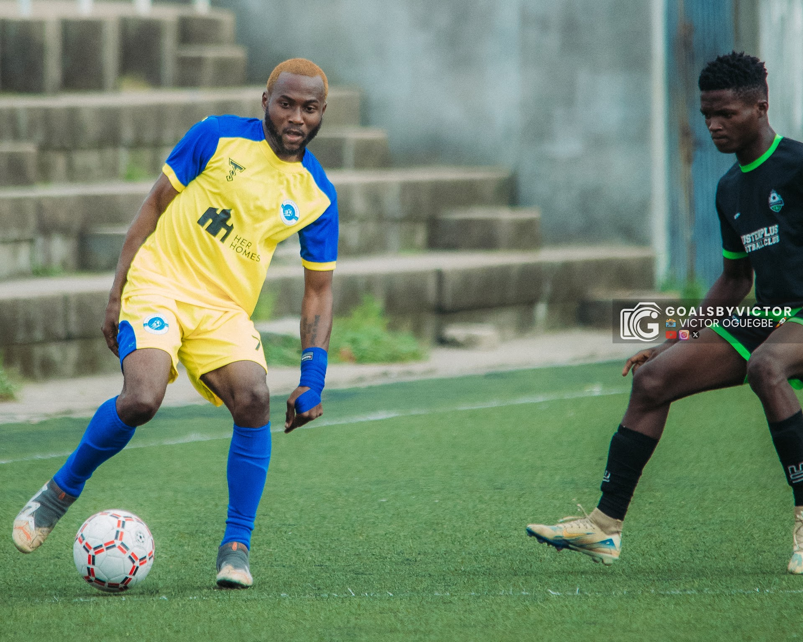
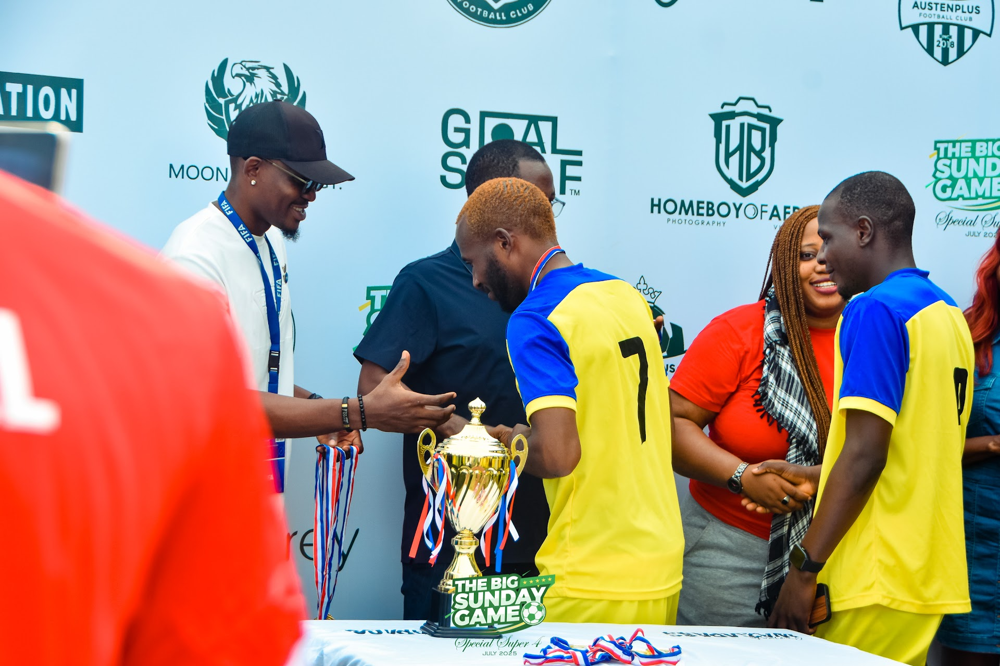

Lagos, Nigeria
Sports · Media · Talent
Olusegun
Adewole
Sports and media professional: operations leader, talent
scout and A&R mind, carrying the on-pitch credibility of a Firecrackers FC captain.
Sports Media
Talent Scout · A&R
Head of Operations ×2
Team Captain
Sports Media ★ Talent Scout ★ Operations Lead ★ A&R ★ Captain ★ Winger ★ Lagos, Nigeria ★
Sports Media ★ Talent Scout ★ Operations Lead ★ A&R ★ Captain ★ Winger ★ Lagos, Nigeria ★
4
Core lanes
Media, talent, operations, and football leadership.
2
Operations roles
Leadership experience across talent and event communities.
1
Current captaincy
On-pitch identity shaped by discipline and communication.
1
Training pathway
Private coaching built around confidence and improvement.
01 / Dual Track
Media instincts and football credibility, in one profile
The positioning is simple: sports media, talent identification and structured execution on
one side, captaincy and player development on the other. Together they make the profile
credible for media teams, brands, clubs and academies.

Positioning lane
In the industry
Two Head of Operations roles, a sharp eye for talent across sports, music and
entertainment, and a growing lane in sports media, podcasting and commentary. The
industry side of the brand is about execution, judgment and storytelling.
Sports media thinking
Talent scouting & A&R
Operations & events
Positioning lane
On the pitch
Captaincy at Firecrackers FC anchors everything with lived credibility. Wide play,
leadership and training discipline, plus the daily work of helping teammates grow and
setting standards with consistency.
Leadership on the pitch
Athlete development
Coaching & player growth
03 / Expertise
Collaboration lanes that turn the profile into clear opportunities
Media development
Football storylines, athlete identity and content thinking: podcasting, commentary and features shaped for media partners and brand teams.
Talent scouting & A&R
A sharp eye for potential across football, sport, music and entertainment, with the judgment to spot upside early and communicate it clearly.
Operations
End-to-end execution for people, events and moving parts that need structure, calm communication and adaptable leadership.
Player development
Coaching support shaped by real match experience, individual improvement work, and a disciplined approach to confidence and growth.
Community work
Team building and audience-facing moments that bring people together around football, development and shared ambition.
04 / Best Fit
Choose the audience and see how the profile translates
05 / Writing
Notes from Shegx
Essays on football, success and life, published on Substack. The latest pieces show up
here as he writes them.
Subscribe on Substack

06 / Philosophy
Leadership means showing up with discipline and creating room for others to grow.
That thinking runs through sports media, talent spotting, operations, coaching, and the
kind of community work that lasts beyond a single moment.
Strong communicator
Adaptable
Creative thinker
Team builder
Eye for talent